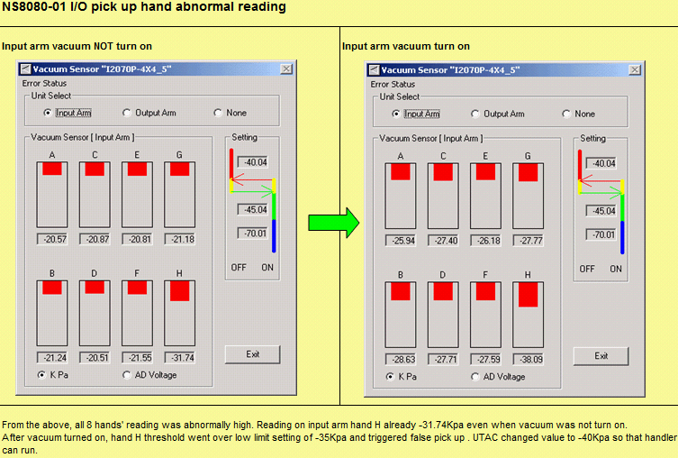
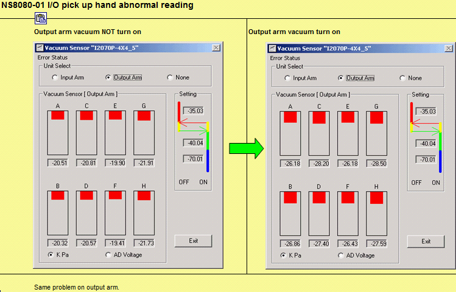
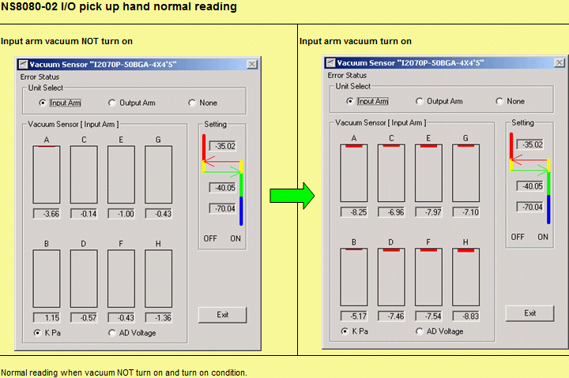
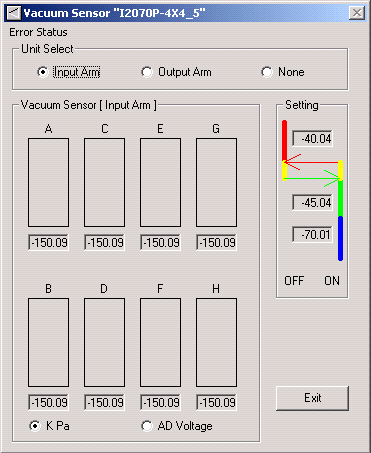
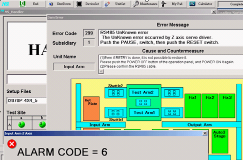

Service History
Subject: NS-8080 8 Hands High UPH and NS70-99C issues
Handler Model: NS-8080 #1, #2 8 Hand High UPH and NS70-99C
Controller: RC520
Date: 28 Jan 2010
Symptom
1. NS8080-01 I/O pick up hand abnormal threshold reading
- Pls see attached file with pictures taken on abnormal threshold reading condition when vacuum not turn on. Maybe we can calibrate/zero the threshold back to 0?



- Also, for the RS485 unknown error which I reported earlier when operation panel power is OFF, I also attached it in the same file under another sheet 'RS485 Unknown error'. This error may be normal and due to no communication between RC520 controller and RS485 board because panel power not turn on? Pls confirm with Japan.
Step 1: Load HMI with operation panel power OFF
Step 2: Go into Vac Monitor and check all reading as -150Kpa.

Step 3: Power ON operation panel and RS485 Unknow error will appear.

2. Tray Pick up error
- NS8080-02 tray pad was replaced by their own spare yesterday and so far no report on tray pick up error. Roel said after replacing their new tray pad which feels softer , warp trays also can pick up. Today I went in to replace NS8080-01 tray pad with Getech spare. I have raised warranty for these 2 claims.
Laurence wants to know why there are 2 different types of tray pad . Their spare one is softer, while the other one from the handler is harder.
Pls confirm whether different types of tray pad material are used in sub-con factory.
3. Tray Separation Error on Loader and Empty Tray buffer
- I have checked and done some adjustment to the loader, reloader 1 and reloader 2 cylinder middle height position. The 4 claws are inserted in even distance between the top and bottom tray. No adjustment has been done on the upper sensor height.
But I noticed sometimes the tray cannot stack properly on top of another tray. Refer to the picture taken below. Not sure if this will cause separation error but it did not occur when i simulated this condition.
New contactor design for P and C package:
1) The old design give us 2 errors:
a) Shuttle 1/2 Device Condition Error
:- After some confirmation with EPSON and Hidaka-san, this is a result of
"Device Floating" in pocket of output shuttle. Depending on how bad the
floating, if top sensor is not blocked, it becomes like a sensor detection
error also.
b) Detection Sensor Error
:- Based on timing sensor and top sensor combinition, this is the likely
error when device is stucked to plunger.
:- So important is we checked with operator if device is missing or stuck to
plunger after change design, they said no more It is just device "not
sitting in pocket properly" suggesting device floating.
Now both handlers running with new design change kit and the error frequency
as follows:
#1 jam data untill 28/01/10 0800hrs
Shuttle 1 Device Condition Error 4502 Shuttle 1 JAM0403 0 1 0 0 Shuttle 1
device condition error 1/25/2010 12:02 retry 51
5212 Shuttle 1 JAM0403 8 0 0 0 Shuttle 1 device condition error
1/28/2010 2:43 retry 109
Shuttle 2 Device Condition Error4817 Shuttle 2 JAM0503 4 0 0 0 Shuttle 2
device condition error 1/26/2010 13:49 retry 121
5243 Shuttle 2 JAM0503 0 1 0 0 Shuttle 2 device condition error
1/28/2010 8:04 retry 49
5244 Shuttle 2 JAM0503 0 1 0 0 Shuttle 2 device condition error
1/28/2010 8:05 retry 44
5247 Shuttle 2 JAM0503 0 1 0 0 Shuttle 2 device condition error
1/28/2010 8:07 retry 29
5248 Shuttle 2 JAM0503 0 0 0 0 Shuttle 2 device condition error
1/28/2010 8:08 retry 2
5249 Shuttle 2 JAM0503 0 0 0 0 Shuttle 2 device condition error
1/28/2010 8:08 skip 21
But you can see 28/01/10, it's just 1 occurence because operator did not
clear jam properly.
Detection Sensor Error4823 Shuttle 2 JAM0505 0 0 0 0 Detection sensor error
(unloading side) 1/26/2010 13:54 retry 18
4928 Shuttle 2 JAM0505 0 0 0 0 Detection sensor error (unloading side)
1/27/2010 0:57 retry 94
#2 jam data untill 28/01/10
Shuttle 1 Device Condition Error2229 Shuttle 1 JAM0403 1 0 0 0 Shuttle 1
device condition error 1/25/2010 10:42 retry 91
2600 Shuttle 1 JAM0403 0 4 0 0 Shuttle 1 device condition error
1/27/2010 3:35 skip 153
Shuttle 2 Device Condition Error2171 Shuttle 2 JAM0503 0 1 0 0 Shuttle 2
device condition error 1/25/2010 3:25 retry 90
2221 Shuttle 2 JAM0503 0 1 0 0 Shuttle 2 device condition error
1/25/2010 10:21 retry 73
Detection Sensor Error
2192 Shuttle 2 JAM0505 0 0 0 0 Detection sensor error (unloading side)
1/25/2010 7:08 retry 28
2268 Shuttle 2 JAM0505 0 0 0 0 Detection sensor error (unloading side)
1/25/2010 15:21 retry 48
2269 Shuttle 2 JAM0505 0 0 0 0 Detection sensor error (unloading side)
1/25/2010 15:22 retry 21
2270 Shuttle 2 JAM0505 0 0 0 0 Detection sensor error (unloading side)
1/25/2010 15:23 retry 30
But you can see on 25/01/10, based on the timing, it's just 2 occurence
although there were 4 entries in the log file.
I think this issue is considered closed as you can see based on the log file
till today 28/01/10, it looks good.
2) Tray Pick up error
:- Both handlers has this error.
:- We found the empty tray is warp leading to empty tray arm cannot pick up.
:- UTAC however refuse to accept this as reason.
:- KuoHong will replace 2 new vacuum pads today for both and continue to
monitor.
:- As discussed with Hidaka-san, it seems this new square pad may not be
able to pick up a warp tray but the old rectangle type may be ok like STM
Muar issue.
:- In fact, IFX also has this issue. Just few weeks running and same problem
happen.
:- We'll monitor how fast this problem comes back and have an internal
discussion that maybe...revert to rectangle pad may be better than 2-3 weeks
warranty once for vacuum pad? Because 2-3weeks running and claim warranty of
pad is not logic...
3) Tray Separation Error on Loader and Empty Tray buffer
:- Everytime we at handler to monitor for 2-3 hours, it does not happen.
:- Difficult for us to adjust anything if we cannot see problem.
:- However, we analyze log file and try to image what possible cause this
error. Maybe too many trays stack or too heavy for cylinder? Maybe some
mis-operation by operator? We've discussed with Hidaka-san to check with
EPSON if our image is possible and how to avoid this problem.
:- For now, we'll adjust the cylinder height for loader tray and reloader 1
based on our image.
#1 jam data untill 28/01/10
5137 Loader JAM0904 0 0 0 0 Tray separation cylinder (upper) error
1/27/2010 22:02 retry 10
5227 Empty 2 JAM1404 0 0 0 0 Tray separation cylinder (upper) error
1/28/2010 6:10 retry 14
3789 Empty 2 JAM1407 0 0 0 0 Tray separation error 1/22/2010 2:46
retry 15
5102 Loader JAM0907 0 0 0 0 Tray separation error 1/27/2010 20:06
retry 96
4) Inout/Output pickup hand. This is new issue. #1 is this situation but #2
is still ok...meaning 0kPa..
:- With vacuum not turn ON, reading already -20kPa to -30kpa. With Vaccum
turn on and no deivce, reading some above -35kPa. This is higher than our
set threshold of -35, -40 and -70. This may result in false device pick up.
:- Currently, UTAC is not aware of this and we're checking on this.
:- If we can zero the vaccum sensor to 0kPa with vaccum not ON, but when
vaccum ON/no device and reading still -35kPa, we may have to clean filter
which requires alignment and we need the jig.
:- If we can zero the vaccum sensor to 0kPa with vaccum not ON, but when
vaccum ON/no device and reading drops to -15kPa for example, situation is
ok....
5) 99C rental handler
:- We are waiting for system time to install the SKIP enable switch.
So it seems, no more outstanding except for 4) which is for today and we're
checking. Temporary increase threshold to -40, -45 and -70. But for 4), UTAC
is not aware yet...
Action
1. The value is seemed to abnormal condition.
When you re-install HMI software with 8 hands option, it will be back correct value.
So, We will try to install Ver1.1 software next Monday.
If it can not be back normal condition, some of air tube have problem.
Note: We would like to analyze the situation, so please take the data as follows;
C:\NS8000\Config\Table\*.*
2. RS485 unknown error
It is occurred on the display because of Power off.
Vmonitor check the value from servo driver directly.
So when you use Vmonitor in HMI, 24V should be ON condition.
Cause
Summary
NS8080-01
- replaced empty tray vacuum pad due to unable to pick up empty tray intermittently. Raise warranty S0406.
– Input and output arm 8 hands abnormal threshold reading. All range from -20 to -30 plus Kpa. Low limit setting is -35Kpa and it will trigger false pick up. Temp solution is to set low limit to -40Kpa and check with EPSON on how to zero back the threshold reading.
Adjustment to loader, reloader 1 and reloader 2 cylinder middle height position to solve tray separation error. Under monitoring.
NS8080-02
One to one exchange of tray pad as UTAC replaced it on Wed due to unable to pick up empty tray intermittently. Raise warranty S0407.
– Adjustment to loader, reloader 1 and reloader 2 cylinder middle height position to solve tray separation error. Under monitoring.